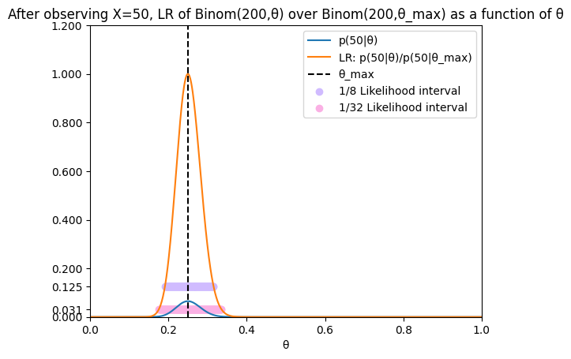
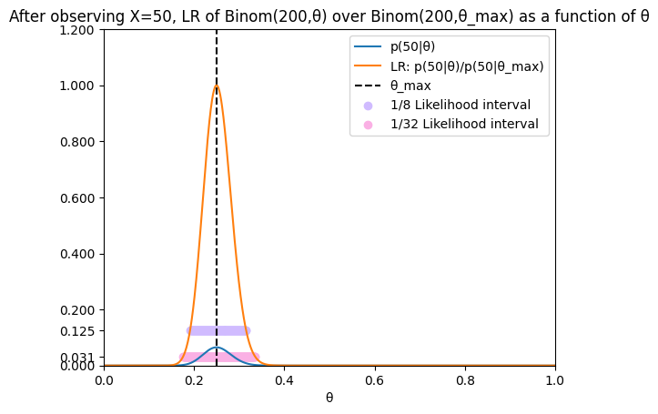

Chapter 11#
Recall likelihood in Bayes’ Theorem#
Recall that likelihood is a component of Bayes’ Theorem, which we remember in this format:
We have seen Bayes’ Theorem in two flavors.
First, in the task of statistical inference, where \(x\) is the value which a random variable is observed to take and where \(\theta\) is an unobservable parameter indicating a possible option for the distribution of the random variable:
Second, a more general one from confirmation theory, where \(E\) is an observable proposition which ones views as confirming or disconfirming an unobserable scientific hypothesis \(H\):
In discussions of likelihood, the observable is fixed#
When we are discussing likelihood, the observable is fixed by context and we treat likelihood as a function of the unobservable value.
In statistical inference, we observe that the random variable takes value \(x\) in the actual world, and then we look at the function which sends input \(\theta\) to output \(p(x\mid \theta)\).
In the confirmation theory, we observe that \(E\) is true and we look at the function which sends input \(H\) to output \(P(E\mid H)\).
Examples of likelihoods#
In the case of statistical inference, here’s some examples:
You flip a coin 20 times and get 6 heads. For various choices of \(\theta\), you ask: given that the coin has bias \(\theta\) towards heads, how probable was it that I got 6 heads? You are asking about likelihoods.
You take measurements in a study from 30 samples and observe that their average is 4.1. For various choices of \(\mu\), you ask: given that the random variables is normal with mean \(\mu\) and variance one, how probable is it that the average from the sample would be \(4.1\)? You are asking about likelihoods.
In the case of Bayesian confirmation theory, here’s some examples:
You are a doctor and observe the presence of a certain symptom. For various diagnoses \(H\) (environmental, genetic, psychological) you ask: if \(H\) were true, how probable would the symptom be? You are asking about likelihoods.
You are a detective and discover an important clue. For various hypotheses \(H\) about identity of the culprit, you ask: if \(H\) were true, how probable would the clue have been? You are asking about likelihoods.
Likelihood Axiom#
This is a two-pronged philosophical principle to the effect that
An observation supports one hypothesis over another just through the likelihood of the first being larger than the likelihood of the second.
The measure of support is given by, and only by, the ratio (fraction) of the one likelihood to the other.
In the case of statistical inference, this reads as follows:
An observation that the random variable takes value \(x\) supports the hypothesis that the random variable is distributed according to \(p(\cdot \mid \theta_1)\) over \(p(\cdot \mid \theta_2)\) just through \(p(x\mid \theta_1)>p(x\mid \theta_2)\).
The measure of support is given by, and only by, the fraction \(\frac{p(x\mid \theta_1)}{p(x\mid \theta_2)}\).
In the case of confirmation theory, this reads as follows:
An observation \(E\) supports hypothesis \(H_1\) over \(H_2\) just through \(P(E\mid H_1)>P(E\mid H_2)\).
The measure of support is given by, and only by, the fraction \(\frac{P(E\mid H_1)}{P(E\mid H_2)}>1\).
Advocates of the likelihood axiom#
These advocates work mostly in statistical inference. Royal’s rendering is the following:
The law of likelihood: if a hypothesis \(A\) implies that the probability that a random variable \(X\) takes value \(x\) is \(p_A(x)\), while hypothesis \(B\) implies that the probability is \(p_B(x)\), then the observation \(X=x\) is evidence supporting \(A\) over \(B\) if \(p_A(x)>p_B(x)\), and the likelihood ratio \(p_A(x)/p_B(x)\), measures the strength of that evidence ([Royall, 2017] p. 3, cf. [Hacking, 1956]).
Here is another classic statement from Edwards:
STATEMENT: THE LIKELIHOOD AXIOM. Within the framework of a statistical model, all the information which the data provide concerning the relative merits of the two hypotheses is contained in the likelihood ratio of those hypotheses on the data, and the likelihood ratio is to be interpreted as the degree to which the data support the one hypothesis against the other ([Edwards, 1992]).
There are fewer direct advocates of the likelihood axiom in Bayesian confirmation theory, although some do consider the case where \(H_2\) is \(\neg H_1\) (see [Fitelson, 1999] p. S363 footnotes).
I am following these authors in calling it an ‘axiom’ or a ‘law’. But note that they really mean what philosophers would call a conceptual analysis or perhaps a Carnapian explication.
Two key features of the Likelihood Axiom#
First, the import of the “just through” and “and only by” is exclusionary:
no other aspect of the observation figures into the nature of the support lent to the one hypothesis over the other
no other measure besides likelihood ratio is appropriate to gauge this support.
(This excludes the prior probability ascribed to the observation and the prior probability associated to the hypothesis– more on this in a moment).
Second, the Likelihood Axiom is contrastive in nature: it ascribes more support to one hypothesis in contrast to another, but it refrains from appealing to, or identifying, an absolute degree of support. Further, the two hypotheses need only union up to a small portion of the hypothesis space:
in the statistical inference case, it will just be a two-element subset of the parameter space.
in the confirmation theory case, the prior probability of the union of the two hypotheses can be quite small.
Differences between likelihood approach and the Bayesians#
In the case of confirmation theory, here are some examples
Doctor example#
You are a doctor and encounter a symptom that is highly seasonal.
On the basis of your medical training, you know that as a general rule (of thumb): if the diagnosis is environmental, then it is much more probable that the symptoms are highly seasonable than if the diagnosis is genetic.
According to the likelihood axiom, the observed symptom supports the hypothesis that you are dealing with an environmental diagnosis more than it supports that you are dealing with a genetic diagnosis. Again:
The likelihood axiom offers no absolute notion of support and you can’t get rid of the contrastive ‘more than’. This is a feature and not a bug, on their view: it is what can be learned and passed on and shared between different doctors in their attempt to do better by different patients.
The likelihood axiom offers a mere comparison between two potential diagnoses, and is silent on the rest. For instance, if you are a medical doctor, you might not know much about how probable a psychological diagnosis would make the symptom.
By contrast, consider it from the perspective of the Bayesian:
The Bayesian has an absolute notion of support, alternatively \(P(H\mid E)-P(H)\) or perhaps \(\frac{P(H|E)}{P(H)}\), which register the difference between the posterior and the prior.
The Bayesian thinks that the observation \(E\) figures crucially in the calculation of the posterior in at least one way that goes above and beyond the likelihood \(P(E\mid H)\), namely through the prior probability \(P(E)\). In this case, what the Bayesian thinks after learning of the symptom is a function of \(P(E)\).
Detective example#
You are a detective and find the following clue: the murder weapon was a gun with a silencer.
On the basis of your detective experience, you know: if the murderer was an assassin, it is much more probable that they used a silencer than if they were a thief.
Hence the clue supports the hypothesis that you are searching for an assassin in contrast to a thief.
Again:
The likelihood axiom offers no absolute notion of support and you can’t get rid of the contrast. This is what the detective would have to tell his partner and the prosector and it is the intersubjective aspect of the how the hypothesis and observation interact.
The likelihood axiom offers a mere comparison between two features of the culprit, and is silent on the rest. For instance, your clue is silent on whether the motive was financial or political or otherwise.
And again:
The Bayesian has an absolute notion of support, alternatively \(P(H\mid E)-P(H)\) or perhaps \(\frac{P(H|E)}{P(H)}\), which register the difference between the posterior and the prior.
The Bayesian thinks that the observation \(E\) figures crucially in the calculation of the posterior in at least one way that goes above and beyond the likelihood \(P(E\mid H)\), namely through the prior probability \(P(E)\).
Comparing two binomial trials#
You flip a coin 20 times and get 8 heads.
This observation supports the hypothesis that your coin has bias towards \(.4\) (blue) over that your coin is fair (orange).
In the diagram to the left, this is because when we look at the black \(x=8\) line, we see that the blue value is higher than the orange value. Or in terms of the log likelihood ratio, this is due to the green line being above 0 at \(x=8\).
In the diagram in the center, we depict the Bayesian perspective when the prior is that the blue is much less probable than the orange. In this case, the Bayesian thinks that the posterior for blue is much less than the posterior for orange, contrary to the likelihood approach.
But this changes if we adjust the Bayesian prior. In the below diagram to the right, we depict the Bayesian perspective when the prior is that the blue and orange are equally probable. In this case, the Bayesian thinks that the posterior for blue is much more than the posterior for orange, in agreement with the likelihood approach.
From the perspective of the likelihood approach, what is happening is that the Bayesian is hostage to her prior and is delivering widely inconsistent judgments instead of abiding with just the stable value of the likelihood.
Show code cell source
import math
import numpy as np
import pandas as pd
from scipy.stats import binom, norm
from scipy.integrate import quad
import matplotlib
import matplotlib.pyplot as plt
import metakernel
from IPython.display import display, Markdown, clear_output
import ipywidgets as widgets
from ipywidgets import interact, interactive, fixed, interact_manual, FloatSlider, IntSlider
from shapely.geometry import LineString
import seaborn as sns
pastel_colors = sns.color_palette("pastel")
---------------------------------------------------------------------------
ModuleNotFoundError Traceback (most recent call last)
Cell In[1], line 12
10 import ipywidgets as widgets
11 from ipywidgets import interact, interactive, fixed, interact_manual, FloatSlider, IntSlider
---> 12 from shapely.geometry import LineString
13 import seaborn as sns
14 pastel_colors = sns.color_palette("pastel")
ModuleNotFoundError: No module named 'shapely'
Show code cell source
def binomvisualizer(n, p1, p2, q, r, observed_value):
# Possible outcomes
x = range(n+1)
# Calculate the PMFs
y1 = binom.pmf(x, n, p1)
y2 = binom.pmf(x, n, p2)
# log likelihood ratio
lr = [math.log(y1[i]/y2[i]) for i in range(n+1)]
# posterior
q1 = q
q2 = 1-q
r1 = r
r2 = 1-r
z1 = (binom.pmf(x, n, p1)*q1)/(binom.pmf(x, n, p1)*q1+binom.pmf(x, n, p2)*q2)
z2 = (binom.pmf(x, n, p2)*q2)/(binom.pmf(x, n, p1)*q1+binom.pmf(x, n, p2)*q2)
a1 = (binom.pmf(x, n, p1)*r1)/(binom.pmf(x, n, p1)*r1+binom.pmf(x, n, p2)*r2)
a2 = (binom.pmf(x, n, p2)*r2)/(binom.pmf(x, n, p1)*r1+binom.pmf(x, n, p2)*r2)
# Create a figure with two subplots side by side
fig, axs = plt.subplots(1, 3, figsize=(10, 5))
# Create the plot
axs[0].plot(x, y1, label='likelihood of Binom(20, %1.2f)' % p1)
axs[0].plot(x, y2, label='likelihood of Binom(20, %1.2f)' % p2)
axs[0].plot(x, lr, label='log likelihood ratio')
axs[0].axvline(x=observed_value, color='black', linestyle='--', label = 'observed_value = %i' % observed_value)
axs[0].set_title('Likelihoods', fontsize=8)
axs[0].axhline(0, color='black', linewidth=0.5)
axs[0].legend(loc = 'upper right')
axs[0].set_ylim(0, .5)
# Create the plot
axs[1].plot(x, z1, label='posterior of Binom(20, %1.2f)' % p1)
axs[1].plot(x, z2, label='posterior of Binom(20, %1.2f)' % p2)
axs[1].axvline(x=observed_value, color='black', linestyle='--', label = 'observed_value = %i' % observed_value)
axs[1].legend(loc = 'upper right')
axs[1].set_title('Posterior, (prior %1.2f blue vs. %1.2f orange)' % (q1, q2), fontsize=8)
# Create the plot
axs[2].plot(x, a1, label='posterior of Binom(20, %1.2f)' % p1)
axs[2].plot(x, a2, label='posterior of Binom(20, %1.2f)' % p2)
axs[2].axvline(x=observed_value, color='black', linestyle='--', label = 'observed_value = %i' % observed_value)
axs[2].legend(loc = 'upper right')
axs[2].set_title('Posterior, (prior %1.2f blue vs. %1.2f orange)' % (r1, r2), fontsize=8)
plt.show()
binomvisualizer(20, 0.4, 0.5, .25, .5, 8)
interact(binomvisualizer,
n=IntSlider(min=1, max=100, step=1, value=20),
p1 = FloatSlider(min=0, max=1, step=0.01, value=0.4),
p2 = FloatSlider(min=0, max=1, step=0.01, value=0.5),
q = FloatSlider(min=0, max=1, step=0.01, value=0.25),
r = FloatSlider(min=0, max=1, step=0.01, value=0.5),
observed_value=FloatSlider(min=1, max=100, step=1, value=8))
<function __main__.binomvisualizer(n, p1, p2, q, r, observed_value)>
Comparing two normal trials#
You take measurements in a study from 30 samples and observe that their average is 1.1.
Assuming these were independent from a normal distribution with variation 4, this observation supports the hypothesis that the mean is 1 more than it supports the hypothesis that the mean is 1.5.
In the diagram to the left, this is because when we look at the black \(x=1.1\) line, we see that the blue value is higher than the orange value.
For the Bayesian, it depends on the prior, and we again see a difference between the diagram to the center and the diagram to the right.
Show code cell source
def normalvisualizer(n,var,mu,nu,q,r,observed_value):
varavg = var / n # variance of the average
# standard deviation of the average
sigma = np.sqrt(var)
sigmaavg = np.sqrt(varavg)
# Create a range
x = np.linspace(0, 3, 10000)
# Calculate the PMFs
y1 = norm.pdf(x, mu, sigmaavg)
y2 = norm.pdf(x, nu, sigmaavg)
# log likelihood ratio
lr = [math.log(y1[i]/(y2[i]+.000000001)+.0000000001) for i in range(10000)]
# posterior
q1 = q
q2 = 1-q
r1 = r
r2 = 1-r
z1 = (norm.pdf(x, mu, sigmaavg)*q1)/(norm.pdf(x, mu, sigmaavg)*q1+norm.pdf(x, nu, sigmaavg)*q2)
z2 = (norm.pdf(x, nu, sigmaavg)*q2)/(norm.pdf(x, mu, sigmaavg)*q1+norm.pdf(x, nu, sigmaavg)*q2)
a1 = (norm.pdf(x, mu, sigmaavg)*r1)/(norm.pdf(x, mu, sigmaavg)*r1+norm.pdf(x, nu, sigmaavg)*r2)
a2 = (norm.pdf(x, nu, sigmaavg)*r2)/(norm.pdf(x, mu, sigmaavg)*r1+norm.pdf(x, nu, sigmaavg)*r2)
# Create a figure with three subplots side by side
fig, axs = plt.subplots(1, 3, figsize=(10, 5))
# Create the plot
axs[0].plot(x, y1, label='likelihood of N(%1.2f, %1.2f)' % (mu, sigmaavg))
axs[0].plot(x, y2, label='likelihood of N(%1.2f, %1.2f)' % (nu, sigmaavg))
axs[0].plot(x, lr, label='log likelihood ratio')
axs[0].axvline(x=observed_value, color='black', linestyle='--', label = 'observed_value = %1.2f' % observed_value)
axs[0].set_title('Likelihoods', fontsize=8)
axs[0].axhline(0, color='black', linewidth=0.5)
axs[0].legend(loc = 'upper right')
axs[0].set_ylim(0, 3)
# Create the plot
axs[1].plot(x, z1, label='posterior of N(%1.2f, %1.2f)' % (mu, sigmaavg))
axs[1].plot(x, z2, label='posterior of N(%1.2f, %1.2f)' % (nu, sigmaavg))
axs[1].axvline(x=observed_value, color='black', linestyle='--', label = 'observed_value = %1.2f' % observed_value)
axs[1].legend(loc = 'upper right')
axs[1].set_title('Posterior, (prior %1.2f blue vs. %1.2f orange)' % (q1, q2), fontsize=8)
# Create the plot
axs[2].plot(x, a1, label='posterior of N(%1.2f, %1.2f)' % (mu, sigmaavg))
axs[2].plot(x, a2, label='posterior of N(%1.2f, %1.2f)' % (nu, sigmaavg))
axs[2].axvline(x=observed_value, color='black', linestyle='--', label = 'observed_value = %1.2f' % observed_value)
axs[2].legend(loc = 'upper right')
axs[2].set_title('Posterior, (prior %1.2f blue vs. %1.2f orange)' % (r1, r2), fontsize=8)
Show code cell source
normalvisualizer(30,4,1,1.5, .25, .5, 1.1)
Show code cell source
interact(normalvisualizer,
n=IntSlider(min=1, max=100, step=1, value=30),
var = FloatSlider(min=0, max=10, step=0.01, value=4),
mu = FloatSlider(min=0, max=10, step=0.01, value=1),
nu = FloatSlider(min=0, max=10, step=0.01, value=1.5),
q = FloatSlider(min=0, max=1, step=0.01, value=0.25),
r = FloatSlider(min=0, max=1, step=0.01, value=0.5),
observed_value=FloatSlider(min=0, max=10, step=0.01, value=1.1))
<function __main__.normalvisualizer(n, var, mu, nu, q, r, observed_value)>
Likelihood intervals#
Definition#
We again fix observe that the random variable takes value \(x\) and we focus on the function which sends \(\theta\) to \(p(x\mid \theta)\), i.e. how likely the parameter made the observation.
Suppose that the likelihood function reaches a unique maximum value \(\theta_{max}\). Then for all other \(\theta\), we will have \(p(x\mid \theta)< p(x\mid \theta_{max})\). Hence the likelihood axiom will always say that observed \(x\) supports \(\theta_{max}\) over any other \(\theta\).
But by how much? The likelihood ratio tells us.
We say that \(\theta\) is in the \(\frac{1}{8}\)-likelihood interval if \(\frac{p(x\mid \theta)}{p(x\mid \theta_{max})}>\frac{1}{8}\). This of course is the same as \(\frac{p(x\mid \theta_{max})}{p(x\mid \theta}<8\).
Likewise, we say that \(\theta\) is in the \(\frac{1}{32}\)-likelihood interval if \(\frac{p(x\mid \theta)}{p(x\mid \theta_{max})}>\frac{1}{32}\). This of course is the same as \(\frac{p(x\mid \theta_{max})}{p(x\mid \theta}<32\).
Example of likelihood ratios in case of binomials#
In this case, the general shape of the likelihood intervals does not change much as one increases the number \(n\) of trials or as one changes the observed interval.
Note: where \(p_{\theta}\) is the pdf of \(Binom(n,\theta)\), we are fixing \(n\) and \(x\) and graphing the function which sends \(\theta\) to \(p_{\theta}(x)=p(x\mid \theta)\).
It looks like a bell shape again, but it is a different function than the pdf \(p_{\theta}\) itself, which fixes \(n\) and \(\theta\) and looks at the function which sends \(x\) to \(p_{\theta}(x)\).
def binom_likelihoodratio_n_x(n,x):
θ = np.linspace(0, 1, 1000)
y1 = binom.pmf(x, n, θ)
max_value = max(y1)
max_index = np.argmax(y1)
y2 = y1/max_value
# Create the plot
plt.plot(θ, y1, label = 'p(%i|θ)' % x)
plt.plot(θ, y2, label = 'LR: p(%i|θ)/p(%i|θ_max)' % (x,x))
plt.title('After observing X=%i, LR of Binom(%i,θ) over Binom(%i,θ_max) as a function of θ' % (x,n,n))
plt.xlabel('θ')
plt.axvline(θ[max_index], color='black', linestyle='--', label = 'θ_max')
# Find the θ values where y2 > 1/8
θ_one_eigth_values = θ[np.where(y2 > 1/8)]
θ_one_thirdtwoth_values = θ[np.where(y2 > 1/32)]
# Mark these x values on the plot
plt.scatter(θ_one_eigth_values, [1/8]*len(θ_one_eigth_values), color=pastel_colors[4], label = '1/8 Likelihood interval')
# Mark these x values on the plot
plt.scatter(θ_one_thirdtwoth_values, [1/32]*len(θ_one_thirdtwoth_values), color=pastel_colors[6], label = '1/32 Likelihood interval')
# Draw a horizontal line at y=0
# Add the legend
plt.legend()
# Set the x-axis values
plt.xlim(0, 1)
# Set the y-axis values
plt.ylim(0,1.05)
# Add a tick at y=1/8
plt.yticks(list(plt.yticks()[0]) + [1/8])
plt.yticks(list(plt.yticks()[0]) + [1/32])
plt.show()
binom_likelihoodratio_n_x(20, 6)
binom_likelihoodratio_n_x(200, 50)
 

interact(binom_likelihoodratio_n_x, n=(1, 1000, 1), x=(0, 500, 1))
<function __main__.binom_likelihoodratio_n_x(n, x)>
Likelihood intervals in case of normals#
Here too, the general shape of the likelihood intervals does not change much as one increases the number \(n\) of measurements or as one changes the observed interval or the fixed variance.
def normal_likelihoodratio_n_x(n,var,x):
varavg = var / n # variance of the average
# standard deviation of the average
sigma = np.sqrt(var)
sigmaavg = np.sqrt(varavg)
# Create a range
μ = np.linspace(0, 10, 100)
y1 = norm.pdf(x, μ, sigmaavg)
max_value = np.nanmax(y1)
max_index = np.argmax(y1)
y2 = y1/max_value
# Create the plot
plt.plot(μ, y1, label = 'p(%1.2f|μ)' % x)
plt.plot(μ, y2, label = 'LR: p(%1.2f|μ)/p(%1.2f|mu_max)' % (x,x))
plt.title('After observing X̅_%i=%1.2f, LR of Norm(μ,%1.2f) over Norm(μ_max, %1.2f) as a function of μ' % (n,x,varavg, varavg))
plt.xlabel('μ')
plt.axvline(μ[max_index], color='black', linestyle='--', label = 'μ_max')
# Find the μ values where y2 > 1/8
μ_one_eigth_values = μ[np.where(y2 > 1/8)]
μ_one_thirdtwoth_values = μ[np.where(y2 > 1/32)]
# Mark these x values on the plot
plt.scatter(μ_one_eigth_values, [1/8]*len(μ_one_eigth_values), color=pastel_colors[4], label = '1/8 Likelihood interval')
# Mark these x values on the plot
plt.scatter(μ_one_thirdtwoth_values, [1/32]*len(μ_one_thirdtwoth_values), color=pastel_colors[6], label = '1/32 Likelihood interval')
# Draw a horizontal line at y=0
# Add the legend
plt.legend()
# Set the x-axis values
plt.xlim(0, 5)
# Set the y-axis values
plt.ylim(0,1.5)
# Add a tick at y=1/8
plt.yticks(list(plt.yticks()[0]) + [1/8])
plt.yticks(list(plt.yticks()[0]) + [1/32])
plt.show()
normal_likelihoodratio_n_x(30,4,1)
normal_likelihoodratio_n_x(200,49,2)


interact(normal_likelihoodratio_n_x, n=(1, 100, 1), var=(0, 10, 0.01), x=(0, 3, 0.01))
<function __main__.normal_likelihoodratio_n_x(n, var, x)>
Key features of likelihood intervals#
Suppose that \(\theta_1\) is in the \(\frac{1}{8}\)-likelihood ratio interval.
By definition, \(\frac{p(x\mid \theta_1)}{p(x\mid \theta_{max})}>\frac{1}{8}\), or what is the same \(\frac{p(x\mid \theta_{max})}{p(x\mid \theta_1)}<8\)
Suppose that \(\theta_2\) is any other parameter.
Then we claim that \(\frac{p(x\mid \theta_2)}{p(x\mid \theta_1)}\leq 8\).
For if not then \(\frac{p(x\mid \theta_2)}{p(x\mid \theta_1)}> 8\).
Then \(8>\frac{p(x\mid \theta_{max})}{p(x\mid \theta_1)}\geq \frac{p(x\mid \theta_2)}{p(x\mid \theta_1)}> 8\).
This is why Royall says that
Values within the 1/8 likelihood interval are those that are ‘consistent with the observations in the strong sense that there is no alternative value that is better supported by a factor of greater than 8. Thus if \(\theta\) is in this interval then there is no alternative for which these observations represent ‘fairly strong evidence’ in favor of that alternative vis-à-vis \(\theta\) ([Royall, 2017] p. 26).